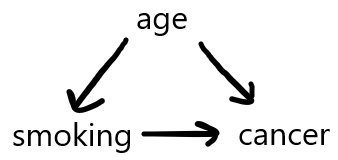
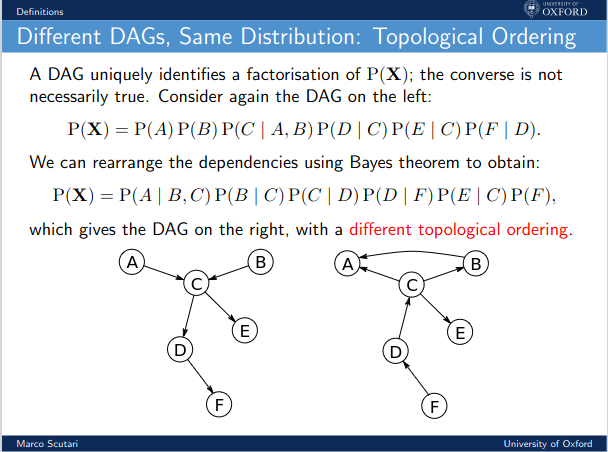

is Professor Emeritus of Computer Science, and was formerly a Professor of Statistics at that university. His participation in this project is informed in part by his experience serving as an expert witness in in a number of litigation cases involving discrimination. His work has been recognized in various forms, including the university-wide Distinguished Teaching Award, Outstanding Adviser Award, and Distinguished Public Service Award. His book, Statistical Regression and Classification: from Linear Models to Machine Learning was the 2017 recipient of the Ziegal Award, given by the statistics journal Technometrics.
Taha Abdullah
is studying for a B.S. in Computer Science at University of California, Davis. He has a keen interest in pursuing a career in Software Engineering.
Arjun Ashok
is currently a sophomore undergraduate at UC Davis double-majoring in Computer Science and Statistics with a minor in Economics. As indicated by his past research and publications, he’s primarily interested in the R&D side of machine learning, although he’s intent on taking his knowledge into real-world applications for developmental purposes.
Shubhada Martha
is a third year Computer Science student pursuing her undergraduate studies at UC Davis. She’s passionate about ethics in technology in the areas of full stack development and AI and Machine Learning. During her spare time, she likes to read spiritual and self-improvement books and paint.
Aditya Mittal
is pursuing a B.S. in Statistics with a minor in Computer Science at University of California, Davis. During the summer, he is employed as a Business Analyst Intern at Cisco and will be returning in summer 2024 for another round. He is interested in pursuing a career in machine learning/software engineering. Fun fact: He moved to the U.S. in 2014 from Mumbai, India.
Billy Ouattara
is a senior Computer Science and Engineering student, His academic journey has been defined by a strong commitment to ethical considerations in the development and deployment of ML/AI models. This dedication is one of the key reasons he eagerly participated in this project.
Jonathan Tran
is studying computer science at UC Davis, with an interest in machine learning and large language models.
Brandon Zarate
is a senior student at UC Davis studying Computer Science.
5 Appendices
5.1 Appendix A: Standard Errors\(\textemdash\)Statistical Inference in a Nutshell
Say I wish to find the mean weight \(\mu\) of all students at the University of California, Davis. It would be infeasible to measure them all, so I take a random sample of 100 students. The mean weight of those 100 students, denoted \(\bar{X}\), is an estimate of \(\mu\).
I know that \(\bar{X}\) will have some unknowm amount of error as an estimate of \(\mu\). One measure of this is its standard error (SE). What is this?
Remember, we took a random sample of students. Different samples will have different values of \(\bar{X}\), i.e. \(\bar{X}\) will have sampling variation. Then the SE of \(\bar{X}\) is defined to be the standard deviation of all possible \(\bar{X}\) values, from all possible samples.
The smaller the SE is, the more confident we are that the \(\bar{X}\) from our particular sample is pretty accurate. Of course, we can’t be completely sure, but we can quantify it probabilistically:
Meaning of that 95% probability figure: Think of all possible samples. Each one has an \(\bar{X}\) value, and an SE value. So, each possible sample, there is a different confidence interval (CI). 95% of those CIs will contain the true \(\mu\).
An approximate 95% confidence interval for \(\mu\), based on \(\bar{X}\), is \(\bar{X} \pm 1.96 \times SE\).
The reader may have heard of the Central Limit Theorem, which says that the sum of many random variables, itself a random variable, has an approximately normal distribution. This is the case for most classical statistical estimators, such as estimated coefficients in linear and generalized linear models. Hence we can find confidence intervals as above, taking the estimator plus and minus 1.96 times the SE of the estimator.
CIs are generally taught together with hypothesis testing or significance testing, which in many cases uses standard errors. Section 2.6 reviews the notion, and discusses problems with this kind of analysis.
5.2 Appendix B: A Note on Causal Inference
An observational study is, in essence, one that is not planned. For instance, say we are comparing an old and a new drug for hypertension. Suppose that, unknown to us, the new medication does well on younger patients but not on older ones. Say the nature of the data collection process results in disproportionately sampling older patients, but our data itself does not include patient ages. This could unfairly make the new drug appear ineffective.
In a randomized clinical trial (RCTs), we would randomly assign treatments to patients, so there would likely be no strong imbalance in age distribution in the two drug groups. So, even if our data still did not record patient age, there would be no age bias in our analysis.
In many cases, RCTs are infeasible or impossible (we cannot “assign” race). Causal inference CI can be viewed both as a way to deal with unseen variables in observational studies, and in its graphical forms, as a descriptive alternative to traditional statistical relational analysis. Though CI takes on many forms, our discussion here will focus on directed acyclic graphs (DAGs).
5.2.1 DAGS
In a DAG, an arrow from A to B signifies that A “causes” B.
For instance, a graphical description of a situation in which older people (say who came of age before anti-smoking campaigns) might be more likely to smoke, and for other reasons may be more likely to develop cancer even if they are nonsmokers. A graphical description would be

Here is an example the bnlearn package on our svcensus dataset:
There are a couple of undirected arcs, e.g. between gender and occupation–found to be relations, but with indeterminate direction, using available data.
Though again we omit a detailed treatment of CI DAGs here, we note that that field defines a confounder of two variables as a variable that is an “ancestor” to both, education being a confounder for income and occupation.
More interesting, though, is the lack of a causal arc from gender to wage income. This is in stark contrast to what dsldLinear suggests:
library(dsld)
Loading required package: fairml
Loading required package: regtools
Loading required package: FNN
*********************
Latest version of regtools at GitHub.com/matloff
Type ?regtools to see function list by category
Loading required package: qeML
Loading required package: rmarkdown
Loading required package: tufte
*********************
Navigating qeML:
Type vignette("Quick_Start") for a quick overview!
Type vignette("Function_List") for a categorized function list
Type vignette("ML_Overview") for an introduction to machine learning
Attaching package: 'qeML'
The following object is masked _by_ '.GlobalEnv':
evalr
Registered S3 method overwritten by 'GGally':
method from
+.gg ggplot2
Here, even correcting for age, education and so on, we still find a substantial gender pay gap. Gender does seem to matter, on its own.
It should be noted that if the bnlearn function hc is used instead of iamb (not shown), there is indeed a link from ‘gender’ to ‘wageinc’, but apparently at the cost of other anomalies. For example, there is no arc, or path of arcs, from ‘wkswrkd’ to ‘wageinc’.
CI DAGs are of course quite visually appealing, and many people find causal concepts helpful in their thoughts processes regarding the data. But as pointed out by the developers of such methodology, the graphs can be very misleading. Using DAGs effectively requires deep understanding of the concepts. A treatment of these concepts is well beyond the scope of this course, but we urge users and consumers of CI to keep the following points in mind:
The definition of cause is of course central to proper use of CI DAGs. It does not mean what one ordinarily thinks of as causal (“The sidewalk was icy, so the man slipped and fell”), and it can become quite complex; “wrapping one’s head around” the definition can be a challenge even for experienced probabilistic modelers.
Unseen variables, such as age in the above example, can be just as harmful in CI contexts as in observational data.
Causal analysis is just as much at the mercy of sample size as is classical statistical analysis, indeed even more so, since the causal version in effect estimates many more parameters. Absence of a link may be due to insufficient data, and nonlinks at the population level may appear as “links” in our graph by random chance in small datasets.
Most important, DAGs have a highly concerning uniqueness problem:
DAGS are not unique
Most important, for any given dataset, there is typically no unique DAG: DAG. Typically many DAGs can fit the dataset equally well, and they can be in conflict with each other. One DAG might say that A causes B, while another, equally credible in terms of data fit, might have B causing A, while a third says A and B are independent.
M. Scutari, author of bnlearn, shows an example in his Cambridge lectures:

The nonuniqueness is of course very concerning. In recent years, there has been much handwringing in science about the Replication Crisis, in which scientists try to replicate the findings of an earlier published paper, and discover serious problems with the earlier results. Imagine the replication problems that can arise if authors of a paper present just one of many equally-credible DAGs, as is usually the case.
CMU professor C. Shalizi has bluntly noted that in cases of nonuniqueness, presenting just one DAG without mentioning the equivalent ones, “…[which] is often what people seem to do,” might be viewed as “lying by omission.” Recognizing the nonuniqueness is “simply a matter of scientific honesty.”
DAGs can indeed lead to valuable insight, but can be misleading as well. A healthy skepticism and a solid understanding of the concepts are mandatory for avoiding misleading or invalid results.
5.3 Appendix C: Standard Errors via the Bootstrap
5.4 Appendix D: Installing the Software
5.5 Python Interface
As previously mentioned, python wrappers are included for most functions.
5.5.1 Requirements For All Python Functions
To use these python functions, users need to have Python version 3.10 installed on their system.
If the user has a later version of Python installed (such as 3.11), and wants to keep that version of Python in their system, they will have to manage multiple Python versions on their system. One easy way to manage multiple environments (in our case, multiple versions of Python for users who need it) is to use Conda, which is a package and environment manager included in both Anaconda and Miniconda. For our purposes, Miniconda is more useful as a minimalistic way to install and use Conda. See this guide for information on how to install Miniconda – keep in mind that, at this time, this package requires Python 3.10 (NOT the latest version of Python), so when the guide prompts you to choose a Miniconda installer, you can choose a link for Python 3.10 from this list which is also linked in the aforementioned guide.
After installing miniconda, refer to this section and later sections of the Conda user guide to set up an environment with Python 3.10.
Python 3.10 conveniently comes with pip, the python package installer. It can be used to install various Python packages/modules that will be required to run the dsld Python functions. All of our Python functions require rpy2, which allows for Python/R environment interaction.
To install rpy2, run pip install rpy2 within the Python 3.10 environment, or see this link
5.5.2 Running dsld Python Functions
As an example, let’s use the python interface for dsldTakeALookAround (the python-equivalent function is called dsldPyTakeALookAround)
to view tabular information on how data features relate to Y and S. The python function allows users to enter arguments using Python data types and converts the resultant R dataframe into a Pandas dataframe.
Different python functions will require different libraries depending on what the function does – Pandas is required for dsldPyTakeALookAround.
These libraries can also (usually) be installed with pip
The user should open the Python Shell Prompt by typing python from the package Python directory (/dsld/inst/Python) in the terminal/cmd prompt. Then, to run the Python function, we can run the following commands in the python shell:
from dsldTakeALook_Py_R import dsldPyTakeALookAround import rpy2.robjects as robjects robjects.r['data']('svcensus') data = robjects.r('svcensus') result = dsldPyTakeALookAround(data, 'wageinc', 'gender') print(result)
The result should be the same information from the R dataframe, but converted to a Pandas dataframe.